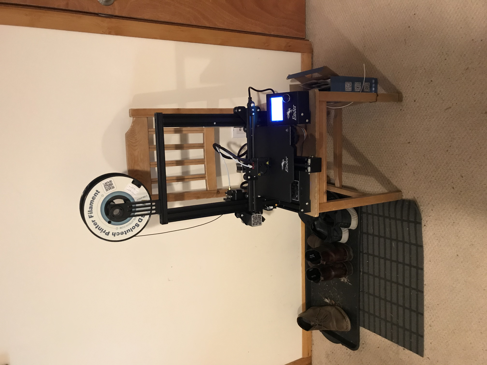
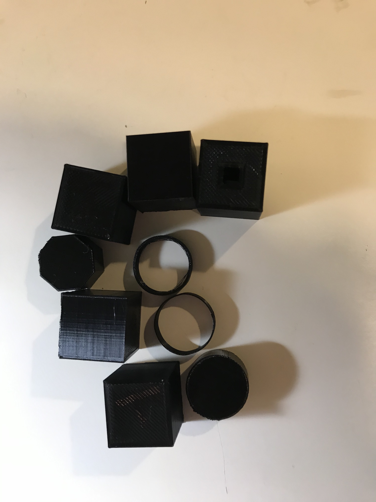

Assignment 2
Getting Started
Step 1: Assembly
I opened the box from the manufacturer, unpackaged all the printer parts and spread them across my living room floor. There was an assembly instruction booklet from the manufacturer that I used to assemble the first step, but I struggled to understand the drawing for the next steps and decided to go to trusted resource YouTube for help.
I found and followed this 30 minute YouTube video that demonstrates and explains the setup process for the Ender 3 Pro. The video was very useful and showed me some techniques and considerations that weren't included in the instruction booklet from the manufacturer. The whole process took me about two hours including times where I replayed parts of the video and stopped to get a snack.
Step 2: Preparing for First Print
I don't have much in terms of space or furniture in my apartment so I had to get a little creative with where to put my printer. I stole a chair from the kitchen table that will go otherwise unused until I can have visitors again when social isolation is over.

I followed another YouTube video to learn how to level the print bed.
Step 3: First Print
Finally, I felt ready to try out my first print. I chose the gcode file for Cat on the SD card provided from the printer manufacturer.
It turned out pretty good! Except for the part where it broke in half because the filament got tangled and broke off halfway through printing, but we all have our flaws and now I know what to avoid for the future.
It's Cubes and Tubes time, baby!
The course assignment for this week involved printing a series of cubes and tubes with different print settings to get to know some of the basics of the Cura slicer.
Cube One
A 2cm cube with the standard "low quality" settings and a brim
I created a 2 cm cube in Rhino and exported the appropriate STL file. I opened the cube in Cura and chose the "Low Quality" profile. Then I changed the build plate adhesion type to "Brim" instead of "Skirt."
Print Time: 25min 12s
Dimensions: 20.13mm x 19.74mm x 19.98mm
Cube Two
A 2cm cube with the standard "standard quality" settings and a brim
Using the same STL file, I changed the profile to "Standard Quality" and kept the Brim setting.
Print Time: 34min 1s
Dimensions: 20.11mm x 19.70mm x 20.14mmm
Cube Three
A 2cm cube with the standard "high quality" settings and a brim
Using the same STL file, I changed the profile to "Super Quality" and kept the Brim setting.
Print Time: about 50 min (Estimation since I forgot to write down the time)
Dimensions: 19.99mm x 19.54mm x 20.05mm
Cube Four
A 2cm cube with a concentric top and bottom layer
I wasn't sure what "concentric top and bottom layer" meant at first. There is a search bar in the settings list of Cura so I searched for "concentric" which turned up nothing. Then, I thought there may be some settings specifically for top and bottom layers so I searched "top." This revealed the the setting "Top/Bottom Pattern" which I changed from Lines to Concentric.
The only difference for the settings for cube three and four is the change in top/bottom pattern. You can see in the photo that Cube Three on the left has a more even, linear top layer and Cube Four on the right has the top layer drawn in concentric squares.
Print Time: 53min 16s
Dimensions: 20.16mm x 19.60mm x 20.01mm
Tube One
A tube 2cm in diameter and .5cm high with a single extrusion wall thickness
I started by creating the shape in Rhino. I created a cylinder but did not fill in the curve. Then I imported the file to Cura.
I set the Wall Line Count to 1 in order to make the wall be a single extrusion thick. After slicing and previewing the print, it looked like the tube was still being filled in and given a top/bottom layer. So I set "Top/Bottom Thickness" and "Infill Density" to 0, and the resulting preview looked more like I expected.
Print Time: 6min 1s
Dimensions: 19.92mm diameter, 4.96mm height
Tube Two
A tube 2cm in diameter and .5cm high with a double extrusion wall thickness and random z-seam alignment
I changed the Wall Line Count to 2 but kept the other settings from the previous print. Then I searched for "seam" and found the setting "Z Seam Alignment" which I set to random.
The additional extrusion of wall thickness meant that Tube Two (right) was sturdier and less flexible than Tube One (left). In the first tube on the left you can see that the Z Seam was in the same place for every level, which resulted in a visible seam along the height of the tube. The second tube on the right doesn't have the visible seam because I randomized the Z seam. I did, however notice that using this setting caused some extra messy strands of PLA in the interior of the second tube from when the extruder jumped to new positions on every level.
Print Time: 13min 7s
Dimensions: 19.93mm diameter, 5.026mm height
Cylinder One
A cylinder 2cm in diameter exported with a 0.1cm tolerance, printed on its round side with supports
I extruded a cylinder in Rhino with 1cm radius & height. I then rotated it 90 degrees to be on the curved side. When I exported to STL, I set the tolerance to 1 mm. With the large size for tolerance, it looks more like an octagonal prism than a cylinder.

I then pulled the cylinder into Cura. Being on its "curved" edge I expect4ed it might fall over during printing, so I checked the "Generate Support" box in the settings.
Print Time: 24min 5s
Dimensions: 19.92mm diameter (from point to point), 4.96mm height
Cylinder Two
A cylinder 2cm in in diameter exported with a 0.005cm tolerance
I reexported an STL file for the cylinder I created in Rhino for the previous step, but I set the tolerance to 0.05mm this time instead. I used the same Cura settings as I did in the previous cylinder so I could compare results.
As I expected, the second cylinder (right) had much smoother curves than the first one.
Print Time: 22min 55s
Dimensions: 19.93mm diameter, 5.02mm height
The Final Cube
A 20.0mm +/- 0.5mm cube with a 5.0mm +/- 0.5mm hole through it
I started by creating a model of the cube I wanted. In Rhino I created a 20mm^3 cube, and then a 5mm x 5mm x 30mm prism in the center of it. I used BooleanDifference to subtract the smaller prism from the cube and create the hole I wanted.
I then sliced the cube and printed it with the default "Standard Quality" settings. The print turned out pretty well and the dimensions were within the +/- 0.5mm range so I left it at that.
Print Time: 38min 48s
Cube Exterior Dimensions: 20.09mm x 19.75mm x 20.13mm
Hole Interior Dimensions: 4.72mm x 4.96mm
Retrospective

Overall, I now have a better understanding of the printing process and slicer settings. I'm looking forward to using this knowledge to design and try out more complex prints going forward.